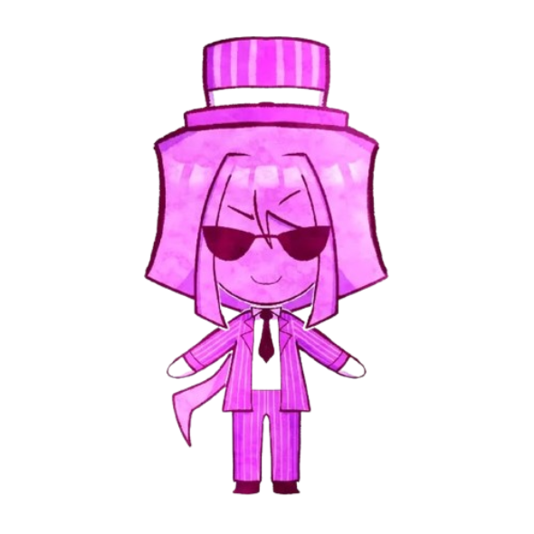
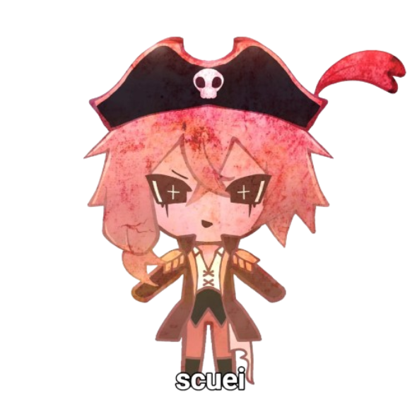

UM LUGAR PRA PIRAR EM TIPOLOGIA.
Um projeto brasileiro dedicado ao estudo das tipologias humanas. Aqui você pode explorar diferentes sistemas de classificação, conhecer teorias, comparar modelos e aprofundar seus conhecimentos sobre tipologia de forma acessível e colaborativa.
ENTRAR NA CASA →Uma casa meio caótica. Do jeito que a gente gosta.
A Casa dos MBTIs reúne conteúdos sobre diferentes sistemas tipológicos em um só lugar. Nosso objetivo é facilitar o acesso ao conhecimento, incentivar o pensamento crítico e oferecer ferramentas que contribuam para o autoconhecimento.
MBTI
Os 16 tipos, suas estruturas, diferenças, semelhanças e os fundamentos do sistema.
Funções Cognitivas
Ne, Ni, Se, Si, Te, Ti, Fe e Fi: conheça as oito funções e suas aplicações dentro do estudo tipológico.
Eneagrama
Tipos, asas, subtipos instintivos, tritipos e diferentes interpretações do sistema.
Quizzes
Teste seus conhecimentos, revise conceitos e descubra o quanto você conhece sobre as diferentes tipologias.
Outras Tipologias
Socionics, temperamentos e outros sistemas de estudo tipológico para ampliar sua compreensão sobre as diferenças individuais.
Comunidade
Um espaço para compartilhar conhecimentos, discutir teorias, trocar experiências e conversar sobre tipologia.
YU YASMYM
A Casa dos MBTIs foi idealizada e desenvolvida por Yasmym, conhecida como Yu. O projeto começou como uma iniciativa individual, criada a partir do interesse pelo estudo das tipologias e da vontade de reunir conhecimento em um só lugar.
Com o passar do tempo, a Casa deixou de ser apenas um projeto individual. Novos membros chegaram, administradores passaram a contribuir e a comunidade cresceu, construindo um espaço de troca, aprendizado e discussão.
A criação e o desenvolvimento inicial do site foram feitos por uma única pessoa. Hoje, porém, a Casa representa também as pessoas que chegaram, participaram e ajudaram a comunidade a crescer.
Minha tipologia
Os personagens também fazem parte da Casa.
A identidade visual da Casa também é construída por seus personagens. Eles acompanham o projeto e dão vida ao universo visual da comunidade.


Pode entrar. A Casa é sua também.
Explore os sistemas, leia os conteúdos, faça os quizzes, participe das discussões e descubra novas formas de compreender a si mesmo.
EXPLORAR A CASA 🏠Continue acompanhando a comunidade.
A Casa dos MBTIs também está presente em outras plataformas. Acompanhe nossas publicações, vídeos, novidades e conteúdos relacionados ao estudo das tipologias.